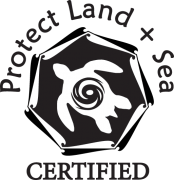

April 9, 2018
Reefs at Risk
In 2005, the National Park Service called in a group of experts to investigate the dying coral of Trunk Bay on the Virgin Island of St. John, a place Finley knew well. The scientists identified the recent warmer waters as having played a part but why was Trunk Bay fairing worse than other locales? The tourists. More specifically, the tourists’ sunscreen.
Every year an estimated 14,000 tons of sunscreen end up in the world’s oceans. Most contain toxins like oxybenzone, octinoxate or octocrylene that harm birds, fish and turtles as well as the algae found on healthy coral. Even if you just sunbathe poolside, the wastewater from your shower afterwards will eventually end up in a river or ocean doing damage.
What can we do

– look for products with the “Protect Land + Sea” certification seal.
– use old-fashioned zinc oxide or titanium dioxide with micro, not nanoparticles.
– don’t spray, slather it on instead.
– skip sunscreen altogether and wear long sleeves and a hat.
Coral reefs are one of the most diverse and economically important ecosystems on our planet. But climate change is threatening these reefs with rising seas, warmer temperatures, stronger tropical storms and higher acidification. If we add in local stressors like overfishing and land-based pollution (ex. sunscreens) the reefs won’t have a fighting chance.
Watch the short film Reefs at Risk for more info.